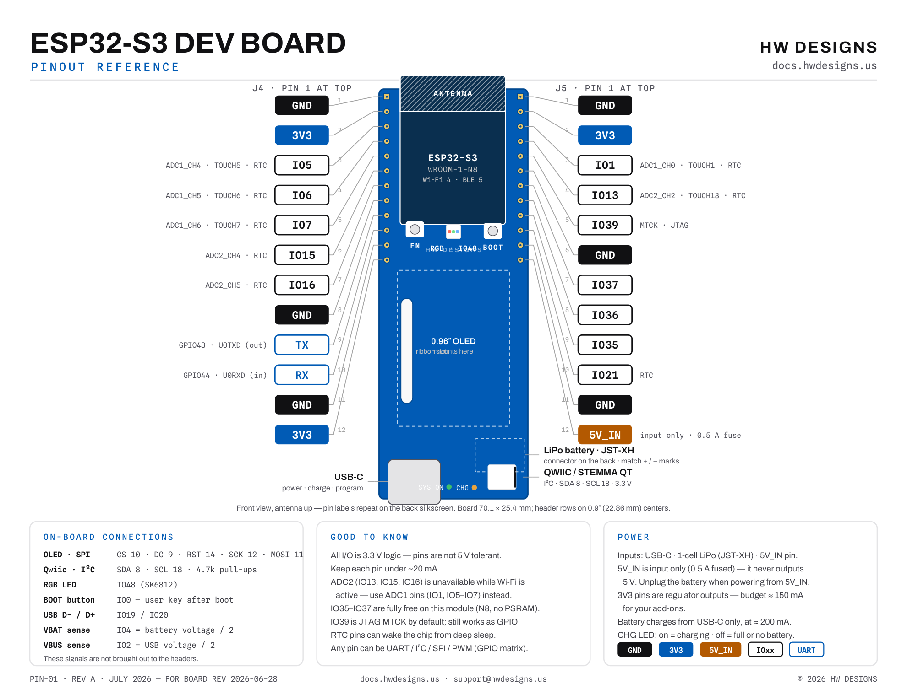

Getting started
From the box to your first upload
The board arrives ready to use — no soldering, no drivers. Steps 1–2 get the built-in demo online; steps 3–4 set you up to write your own code.
-
Plug it in
Connect the board to any USB‑C charger or computer port. It powers up and starts the built-in Weather Clock on the OLED display.
-
Put it on your Wi‑Fi
On first boot the board opens its own setup hotspot. Join it from your phone, and a setup page appears — pick your home network and enter its password. The board restarts and shows your local time and weather, with the RGB LED tinted by the temperature outside.
The board uses 2.4 GHz Wi‑Fi. If your router broadcasts separate 2.4 GHz and 5 GHz names, choose the 2.4 GHz one.
-
Set up the Arduino IDE
Install the free Arduino IDE, then open File → Preferences and paste this into Additional boards manager URLs:
https://espressif.github.io/arduino-esp32/package_esp32_index.jsonOpen Tools → Board → Boards Manager, search for
esp32, and install esp32 by Espressif Systems. Then match these settings under Tools:Board ESP32S3 Dev Module USB CDC On Boot Enabled Flash Size 8MB (64Mb) Partition Scheme 8M with spiffs No driver install is needed — the board uses the ESP32‑S3’s native USB, which Windows 10/11, macOS, and Linux recognize out of the box.
-
Upload your first sketch
Select the board’s port under Tools → Port, paste this in, and click Upload. The onboard LED cycles red, green, blue:
#define RGB_PIN 48 // onboard RGB LED void setup() {} void loop() { neopixelWrite(RGB_PIN, 40, 0, 0); delay(400); // red neopixelWrite(RGB_PIN, 0, 40, 0); delay(400); // green neopixelWrite(RGB_PIN, 0, 0, 40); delay(400); // blue }If the port doesn’t appear or the upload won’t start: use a data-capable USB‑C cable, or hold the BOOT button while plugging the board in, then try again.
-
Keep going
Take the board tour below, grab the pinout diagram and user guide, then build something from the example projects — including the full source of the Weather Clock your board shipped with.
Board tour
Know your board
Both sides, and what everything on them does. Renders show the bare board — the OLED display mounts on the front.
Front
- ESP32‑S3 module up top — the green area is the Wi‑Fi antenna; keep it clear of metal.
- EN (reset) and BOOT buttons, with the RGB status LED between them.
- USB‑C for power, charging, and programming.
- CHG and SYS ON indicator LEDs by the USB port.
- Qwiic / STEMMA QT connector (JST‑SH 4‑pin) for solder-free I²C sensors.
Back
- Every header pin labeled on the silkscreen — power (3V3, GND, 5V_IN), GPIO numbers, and TX/RX.
- 30‑pin ribbon connector for the OLED display.
- LiPo battery connector (JST‑XH) with polarity marked + / −.
- Board revision code printed along the edge — include it when you contact support.

Where’s the screen?
These renders show the bare board. The 0.96″ OLED sits on the front; its ribbon cable passes through the center slot to the connector on the back.
Best Wi‑Fi range
Let the antenna end hang over the edge of your breadboard or enclosure. Metal, batteries, and hands near the green area reduce range.
Before you plug in a battery
Use a single-cell 3.7 V LiPo with a JST‑XH plug and match the + / − marks on the board. Battery lead polarity is not standardized between vendors — check every new battery.
70.1 × 25.4 mm (2.76″ × 1.00″) · ≈72.4 mm incl. antenna overhang · 0.1″ header pitch, breadboard friendly · Designing an enclosure? Download the 3D model (STEP)
At a glance
What’s on the board
Downloads
Documents & references
| Document | What it covers | File |
|---|---|---|
| Schematic | Full board schematic | schematic.pdf |
| User guide | Setup, features & troubleshooting | user-guide.pdf |
| Pinout diagram | Printable pin reference | pinout.pdf |
| 3D model | Exact board geometry for enclosures & mounts | 3D.step |
| DVT report | Rev A design-verification results — 122 tests, power deep-dive, known issues | open report ↗ |
| DVT test plan | Full Rev A test procedure & board reference (v1.2) | plan.docx |
| DVT firmware guide | How to flash & run the DVT firmware pack | guide.docx |
| DVT results tracker | Every measurement, pass/fail rollup & issue log | tracker.xlsx |
| DVT helper firmware | Serial-menu bring-up & self-test sketch (Arduino) | DVT_Helper.ino |
| ESP32‑S3‑WROOM‑1 datasheet | Official module specifications from Espressif | espressif.com ↗ |
| Demo firmware source | The Weather Clock sketch your board ships with | GitHub ↗ |
Missing something? Email us and we’ll send it over.
Example projects
Three ways to start building
Weather Clock
The firmware your board ships with. It fetches your local forecast over Wi‑Fi and draws a clock and conditions on the OLED — a full tour of Wi‑Fi, HTTP, JSON, and the display in one sketch.
View source ↗Qwiic sensor in 5 minutes
Plug a Qwiic temperature & humidity sensor into the side connector — no soldering — and chart live readings on the screen.
View source ↗Battery-powered sensor logger
Read a Qwiic temperature & humidity sensor, show it on the OLED, then deep‑sleep between readings — the board’s low sleep current is the key to running for days on a small LiPo.
View source ↗Support
Stuck? We’ll help.
Talk to us
Tell us what you tried and what happened — a photo of your setup helps, and the code printed on the back of the board tells us your exact revision. We read every message.
My computer doesn’t see the board
Use a data-capable USB‑C cable — many bundled cables are charge-only. No drivers are needed on Windows 10/11, macOS, or Linux. If the port still doesn’t appear, hold the BOOT button while plugging the board in, then release it and check again.
Which battery does it take?
A single-cell 3.7 V LiPo with a JST‑XH plug — the socket is on the back of the board. It charges automatically from USB‑C at ≈200 mA, and on-board protection guards against over-charge, over-discharge, over-current, and reverse polarity. Match the + / − marks next to the connector — battery lead polarity varies between vendors.
Can I use something other than Arduino?
Yes — it’s a standard ESP32‑S3, so ESP‑IDF, MicroPython, and CircuitPython all work. This guide covers Arduino because it’s the fastest path to a first upload.